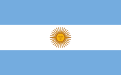

About Me
My Name is Jesus Madero. I was born in Venezuela and live with my family in Mar del Plata, Argentina. I am currently studying as a Software Developer. recursos.
The national flag of Argentina is, along with the national coat of arms, the national anthem, and the cockade, one of the four national symbols of the country. Its creation corresponds to Manuel Belgrano, who designed it with the blue and white colors of the national cockade; although it later had some modifications. It was raised for the first time in Rosario, on February 27, 1812.
Web Dev Resources
MdnMdn Docs.
Coolors Coolors.
My toolsrecursos.
My toolsrecursos.